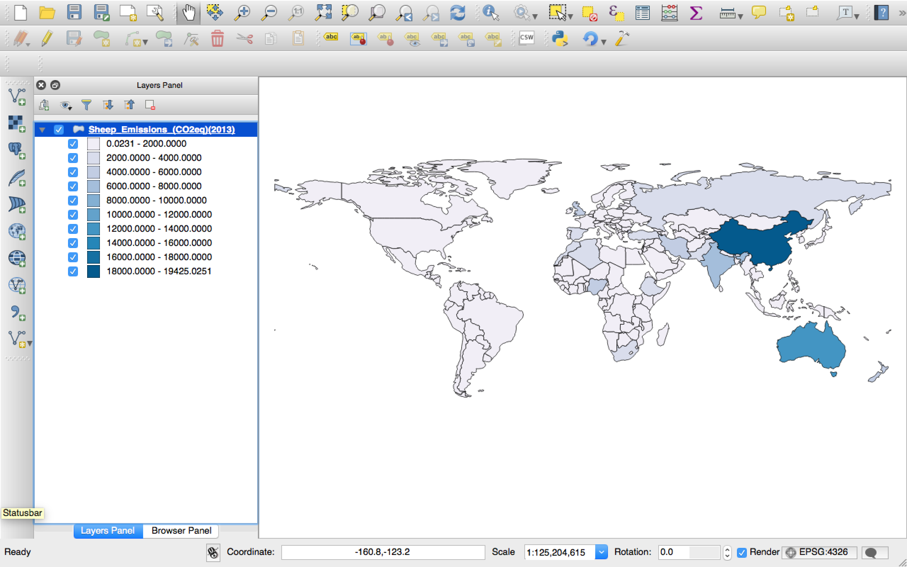

Download FAOSTAT statistics and create thematic maps.
| Plugin | Output |
|---|---|
|
|
 |
FAOSTAT is maintained by the Statistics Division of the Food and Agricultural Organization of the United Nations. In working directly with the countries, the Statistics Division supports the development of national statistical strategies, the strengthening of Institution and technical capacities, and the improvement of statistical systems.
The FAOSTAT system is one of FAO's most important corporate systems. It is a major component of FAO's information systems, contributing to the organization's strategic objective of collecting, analyzing, interpreting, and disseminating information relating to nutrition, food and agriculture for development and the fight against global hunger and malnutrition.
Food and Agriculture Organization Corporate Statistical Database. (2015, January 22). In Wikipedia, The Free Encyclopedia. Retrieved 16:23, August 30, 2015, from Wikipedia
This plugin uses the official FAOSTAT API to retireve official FAO data and create thematic maps out of it.
FAOSTAT data spans from 1961 to 2014 and it is updated yearly.
The user interface allows the user to select the parameters to filter FAOSTAT data. The database is organized in
groups (e.g. Production) and domains (e.g. Crops). Each domain then contains
elements (e.g. Area
Harvested) and items (e.g. Wheat). The plugin applies these filters and downloads data
for all the available
years and countries.
Once the data is downloaded the plugin clones the base layer and add, to its attributes table, a column of values for
each available year. The output layer is then stored in a folder system that follows the FAOSTAT structure. For
instance, if you download data from the Production group (code: Q) and the Crops domain (code: QC),
the
final output
will be stored in [DOWNLOAD_FOLDER]/Q/QC/. The layer is then added to the map If the Add output
layer to
the
canvas flag has been selected. The layer shows, by default, the latest available year, and it is styled with
11
Pretty intervals and the PuBu gradient.
The base layer is a modified version of the Natural Earth 1:110m Cultural Vectors that has been edited to contain an extra column with the FAOSTAT country codes.
The plugin is currently available in English and Italian. A project on Transifex has been added at this URL. Anyone can contribute to add more languages. Considering the FAOSTAT data is also available in French and Spanish, it would be great to have these languages in place.